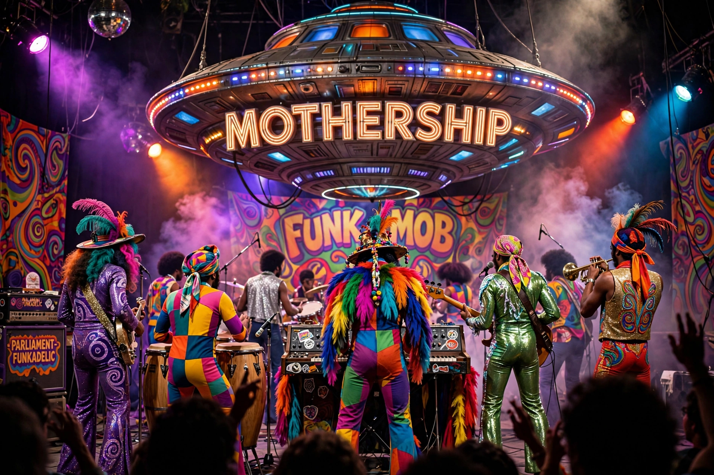

Parliament-Funkadelic (commonly abbreviated P-Funk) is an American musical collective led by George Clinton, comprising the bands Parliament and Funkadelic, which recorded mainly in the 1970s. They pioneered funk with psychedelic, Afrofuturist and theatrical concepts.

Clinton began with doo-wop group The Parliaments ("(I Wanna) Testify", 1967). Contractual issues led to two incarnations: Funkadelic, guitar-driven psychedelic funk ("Maggot Brain", 1971), and Parliament, horn-driven and conceptual ("Mothership Connection", 1975; "One Nation Under a Groove", 1978, as Funkadelic). The elaborate "P-Funk Earth Tour" featured a landing Mothership prop.
P-Funk was inducted into the Rock and Roll Hall of Fame in 1997 and received a Grammy Lifetime Achievement Award in 2019. Its sound heavily influenced hip hop (via sampling by Dr. Dre and others), Prince, and G-funk.
See also: George Clinton